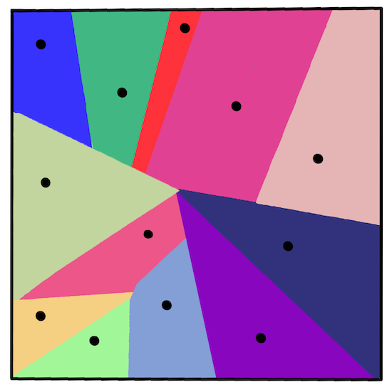
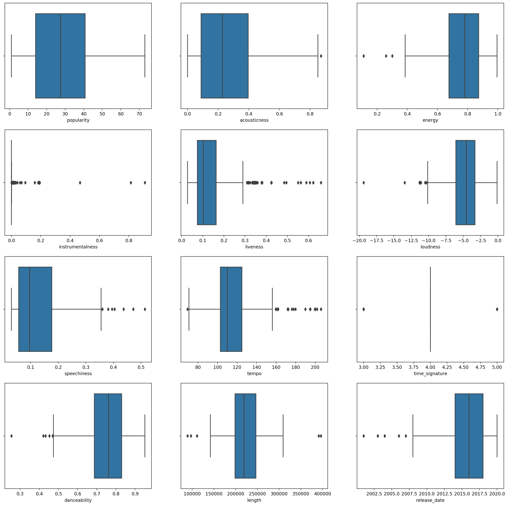
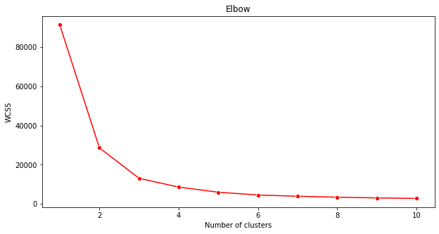
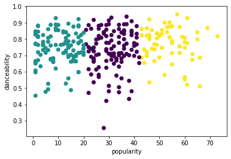
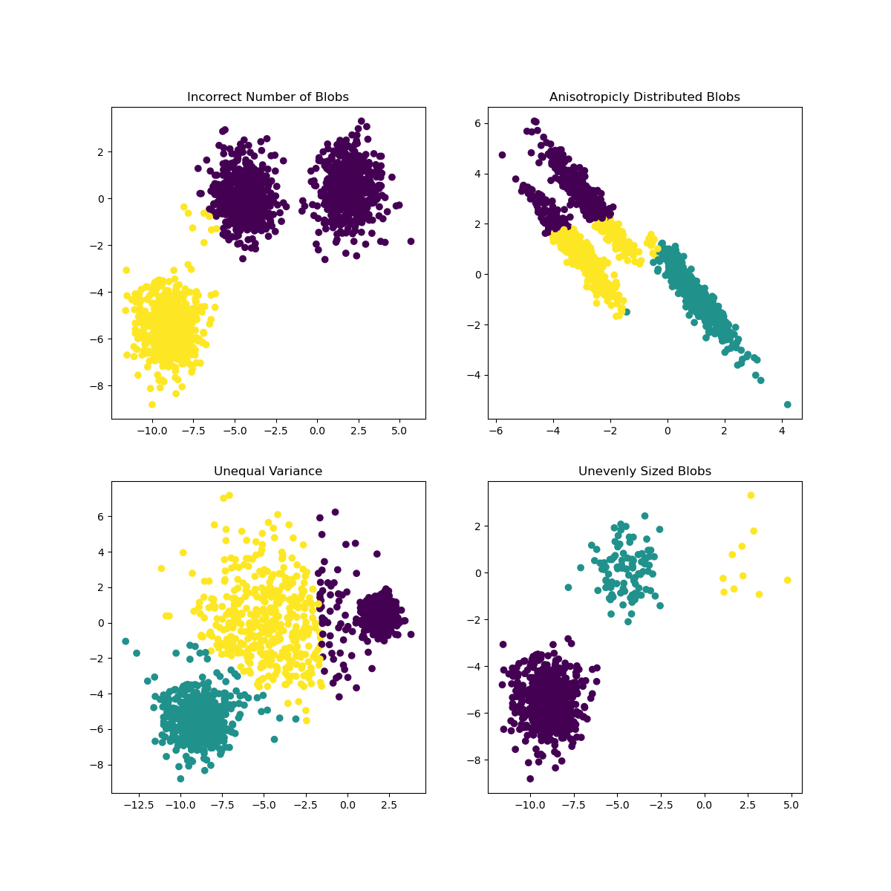

K-Means clustering⚓︎
Pre-lecture quiz⚓︎
In this lesson, you will learn how to create clusters using Scikit-learn and the Nigerian music dataset you imported earlier. We will cover the basics of K-Means for Clustering. Keep in mind that, as you learned in the earlier lesson, there are many ways to work with clusters and the method you use depends on your data. We will try K-Means as it's the most common clustering technique. Let's get started!
Terms you will learn about:
- Silhouette scoring
- Elbow method
- Inertia
- Variance
Introduction⚓︎
K-Means Clustering is a method derived from the domain of signal processing. It is used to divide and partition groups of data into 'k' clusters using a series of observations. Each observation works to group a given datapoint closest to its nearest 'mean', or the center point of a cluster.
The clusters can be visualized as Voronoi diagrams, which include a point (or 'seed') and its corresponding region.

infographic by Jen Looper
The K-Means clustering process executes in a three-step process:
- The algorithm selects k-number of center points by sampling from the dataset. After this, it loops:
- It assigns each sample to the nearest centroid.
- It creates new centroids by taking the mean value of all of the samples assigned to the previous centroids.
- Then, it calculates the difference between the new and old centroids and repeats until the centroids are stabilized.
One drawback of using K-Means includes the fact that you will need to establish 'k', that is the number of centroids. Fortunately the 'elbow method' helps to estimate a good starting value for 'k'. You'll try it in a minute.
Prerequisite⚓︎
You will work in this lesson's notebook.ipynb file that includes the data import and preliminary cleaning you did in the last lesson.
Exercise - preparation⚓︎
Start by taking another look at the songs data.
-
Create a boxplot, calling
boxplot()for each column:plt.figure(figsize=(20,20), dpi=200) plt.subplot(4,3,1) sns.boxplot(x = 'popularity', data = df) plt.subplot(4,3,2) sns.boxplot(x = 'acousticness', data = df) plt.subplot(4,3,3) sns.boxplot(x = 'energy', data = df) plt.subplot(4,3,4) sns.boxplot(x = 'instrumentalness', data = df) plt.subplot(4,3,5) sns.boxplot(x = 'liveness', data = df) plt.subplot(4,3,6) sns.boxplot(x = 'loudness', data = df) plt.subplot(4,3,7) sns.boxplot(x = 'speechiness', data = df) plt.subplot(4,3,8) sns.boxplot(x = 'tempo', data = df) plt.subplot(4,3,9) sns.boxplot(x = 'time_signature', data = df) plt.subplot(4,3,10) sns.boxplot(x = 'danceability', data = df) plt.subplot(4,3,11) sns.boxplot(x = 'length', data = df) plt.subplot(4,3,12) sns.boxplot(x = 'release_date', data = df)This data is a little noisy: by observing each column as a boxplot, you can see outliers.

You could go through the dataset and remove these outliers, but that would make the data pretty minimal.
-
For now, choose which columns you will use for your clustering exercise. Pick ones with similar ranges and encode the
artist_top_genrecolumn as numeric data:from sklearn.preprocessing import LabelEncoder le = LabelEncoder() X = df.loc[:, ('artist_top_genre','popularity','danceability','acousticness','loudness','energy')] y = df['artist_top_genre'] X['artist_top_genre'] = le.fit_transform(X['artist_top_genre']) y = le.transform(y) -
Now you need to pick how many clusters to target. You know there are 3 song genres that we carved out of the dataset, so let's try 3:
from sklearn.cluster import KMeans nclusters = 3 seed = 0 km = KMeans(n_clusters=nclusters, random_state=seed) km.fit(X) # Predict the cluster for each data point y_cluster_kmeans = km.predict(X) y_cluster_kmeans
You see an array printed out with predicted clusters (0, 1,or 2) for each row of the dataframe.
-
Use this array to calculate a 'silhouette score':
from sklearn import metrics score = metrics.silhouette_score(X, y_cluster_kmeans) score
Silhouette score⚓︎
Look for a silhouette score closer to 1. This score varies from -1 to 1, and if the score is 1, the cluster is dense and well-separated from other clusters. A value near 0 represents overlapping clusters with samples very close to the decision boundary of the neighboring clusters. (Source)
Our score is .53, so right in the middle. This indicates that our data is not particularly well-suited to this type of clustering, but let's continue.
Exercise - build a model⚓︎
-
Import
KMeansand start the clustering process.from sklearn.cluster import KMeans wcss = [] for i in range(1, 11): kmeans = KMeans(n_clusters = i, init = 'k-means++', random_state = 42) kmeans.fit(X) wcss.append(kmeans.inertia_)There are a few parts here that warrant explaining.
🎓 range: These are the iterations of the clustering process
🎓 random_state: "Determines random number generation for centroid initialization." Source
🎓 WCSS: "within-cluster sums of squares" measures the squared average distance of all the points within a cluster to the cluster centroid. Source.
🎓 Inertia: K-Means algorithms attempt to choose centroids to minimize 'inertia', "a measure of how internally coherent clusters are." Source. The value is appended to the wcss variable on each iteration.
🎓 k-means++: In Scikit-learn you can use the 'k-means++' optimization, which "initializes the centroids to be (generally) distant from each other, leading to probably better results than random initialization.
Elbow method⚓︎
Previously, you surmised that, because you have targeted 3 song genres, you should choose 3 clusters. But is that the case?
-
Use the 'elbow method' to make sure.
plt.figure(figsize=(10,5)) sns.lineplot(range(1, 11), wcss,marker='o',color='red') plt.title('Elbow') plt.xlabel('Number of clusters') plt.ylabel('WCSS') plt.show()Use the
wcssvariable that you built in the previous step to create a chart showing where the 'bend' in the elbow is, which indicates the optimum number of clusters. Maybe it is 3!
Exercise - display the clusters⚓︎
-
Try the process again, this time setting three clusters, and display the clusters as a scatterplot:
from sklearn.cluster import KMeans kmeans = KMeans(n_clusters = 3) kmeans.fit(X) labels = kmeans.predict(X) plt.scatter(df['popularity'],df['danceability'],c = labels) plt.xlabel('popularity') plt.ylabel('danceability') plt.show() -
Check the model's accuracy:
labels = kmeans.labels_ correct_labels = sum(y == labels) print("Result: %d out of %d samples were correctly labeled." % (correct_labels, y.size)) print('Accuracy score: {0:0.2f}'. format(correct_labels/float(y.size)))This model's accuracy is not very good, and the shape of the clusters gives you a hint why.

This data is too imbalanced, too little correlated and there is too much variance between the column values to cluster well. In fact, the clusters that form are probably heavily influenced or skewed by the three genre categories we defined above. That was a learning process!
In Scikit-learn's documentation, you can see that a model like this one, with clusters not very well demarcated, has a 'variance' problem:

Infographic from Scikit-learn
Variance⚓︎
Variance is defined as "the average of the squared differences from the Mean" (Source). In the context of this clustering problem, it refers to data that the numbers of our dataset tend to diverge a bit too much from the mean.
✅ This is a great moment to think about all the ways you could correct this issue. Tweak the data a bit more? Use different columns? Use a different algorithm? Hint: Try scaling your data to normalize it and test other columns.
Try this 'variance calculator' to understand the concept a bit more.
🚀Challenge⚓︎
Spend some time with this notebook, tweaking parameters. Can you improve the accuracy of the model by cleaning the data more (removing outliers, for example)? You can use weights to give more weight to given data samples. What else can you do to create better clusters?
Hint: Try to scale your data. There's commented code in the notebook that adds standard scaling to make the data columns resemble each other more closely in terms of range. You'll find that while the silhouette score goes down, the 'kink' in the elbow graph smooths out. This is because leaving the data unscaled allows data with less variance to carry more weight. Read a bit more on this problem here.
Post-lecture quiz⚓︎
Review & Self Study⚓︎
Take a look at a K-Means Simulator such as this one. You can use this tool to visualize sample data points and determine its centroids. You can edit the data's randomness, numbers of clusters and numbers of centroids. Does this help you get an idea of how the data can be grouped?
Also, take a look at this handout on K-Means from Stanford.
Assignment⚓︎
Try different clustering methods
创建日期: November 22, 2023